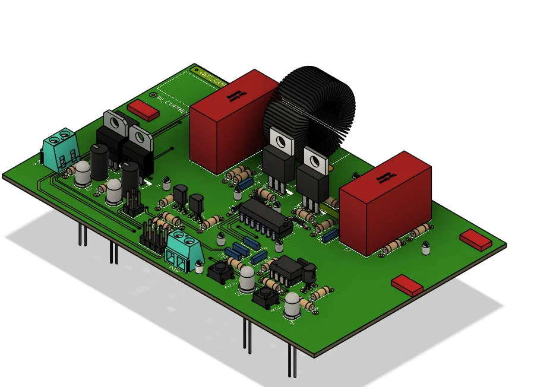
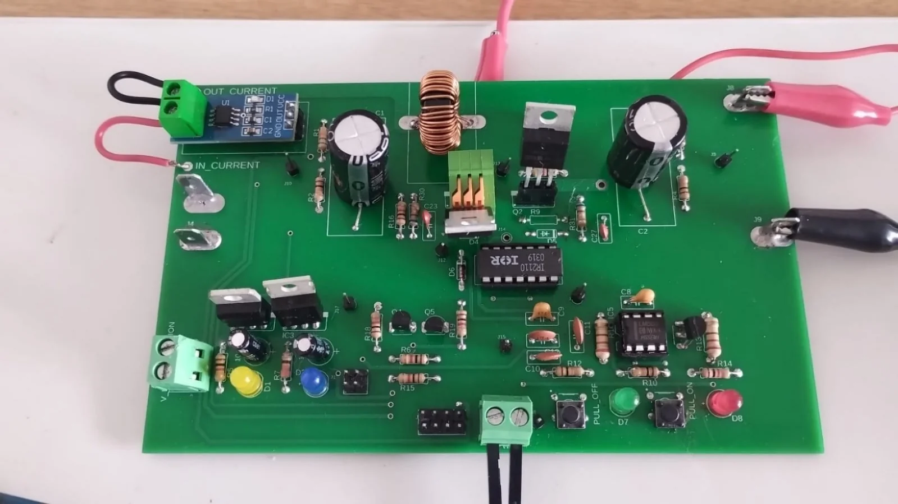
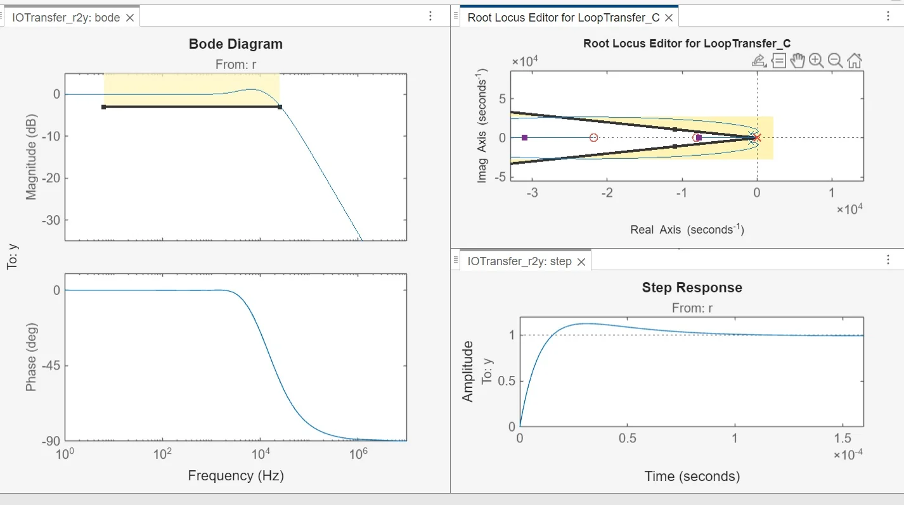

Fuente fotovoltaica
Panel Victron BlueSolar de 55 W, con tensión en máxima potencia de 18,8 V y corriente de 2,94 A.
01Diseño de un convertidor DC–DC Boost síncrono cuyo propósito es regular el voltaje del panel (VPV) y la corriente de entrada (Iin) para transferir energía hacia una batería LiFePO₄.

Panel Victron BlueSolar de 55 W, con tensión en máxima potencia de 18,8 V y corriente de 2,94 A.
01Etapa síncrona con dos MOSFET, inductor de 330 µH y capacitores de filtrado de 100 µF.
02Sistema de control PI en cascada mediante Arduino Uno, compuesto por un lazo externo de voltaje del panel fotovoltaico y un lazo interno de corriente de entrada, encargado de ajustar el ciclo de trabajo de la señal PWM.
03Objetivo de control: mantener el voltaje fotovoltaico cerca de su referencia y regular la corriente de entrada mediante dos lazos PI en cascada. La integración con una batería requiere supervisión, protecciones y validación experimental.
Una arquitectura Boost síncrona implementada en PCB, con accionamiento de compuertas, aislamiento de medición de corriente y fuentes auxiliares.

Dos MOSFET IRFB4110, bobina toroidal de 330 µH, capacidad de filtrado y operación elevadora.
IR2110 con señales de mando complementarias a verificar y circuito de habilitación mediante LM555.
Sensor ACS712 de ±5 A (185 mV/A) y divisores resistivos para los canales analógicos del Arduino.
Arduino Uno R3, ADC de 10 bits y Timer1 en Fast PWM, modo 14, con TOP = 509.
El PI externo compara VPV con su referencia y genera Iref. El PI interno mide Iin y ajusta el duty. La salida se supervisa para aplicar las protecciones requeridas.
La batería establece la tensión en sus bornes durante la transferencia de energía dentro de sus condiciones de operación. El Boost ajusta su ciclo de trabajo para controlar la corriente tomada del panel y sostener su punto de operación fotovoltaico. El diseño debe detener o limitar la transferencia si se exceden los límites de batería, salida o corriente. Esta arquitectura está propuesta; aún falta validar los dos PI operando juntos.
ICR1 = 509;
TCCR1A = _BV(COM1A1) | _BV(WGM11);
TCCR1B = _BV(WGM13) | _BV(WGM12) | _BV(CS10);
// F = 16 MHz / (509 + 1)
// F ≈ 31,37 kHz en D9Firmware experimental disponible en el repositorio. El periodo de actualización del PI interno programado es de 20 ms; no debe confundirse con el periodo del PWM.
Se calcularon las condiciones nominales de operación y se compararon con resultados obtenidos en simulaciones del convertidor ideal.

Inductancia seleccionada para la etapa de potencia. El estudio del convertidor incluye modelos y análisis dinámicos previos; la etapa actual se centra en regular VPV e Iin con dos controladores PI en cascada.
La documentación experimental registra tanto los avances como las anomalías encontradas durante la integración de la instrumentación y el firmware.
Lectura aproximada de corriente de entrada con el ACS712 de 5 A durante el ensayo de instrumentación.
Adquisición de señalVoltaje de salida pasivo con 19,03 V de entrada; fuente de laboratorio en modo CV.
Medición físicaEl programa bloqueó el duty cuando la medición de salida resultó incoherente con el multímetro.
Falla detectadaPara Vout = 18,41 V y un divisor R3 = 270 kΩ / R4 = 10 kΩ se esperan ≈ 0,658 V en el punto medio. El diagnóstico no confirmó todavía una causa única de la interferencia.
Imágenes extraídas del informe y de los registros originales de desarrollo. Selecciona una imagen para ampliarla.
Informe original, código fuente y scripts de cálculo. Los archivos de firmware se entregan con fines de revisión académica; no deben usarse en un cargador sin protecciones independientes.
Proyecto integrador de la asignatura Electrónica de Potencia, Institución Universitaria ITM, periodo 2026-2.
Diseño de potencia · Firmware · Simulación
Modelado · Integración · Documentación